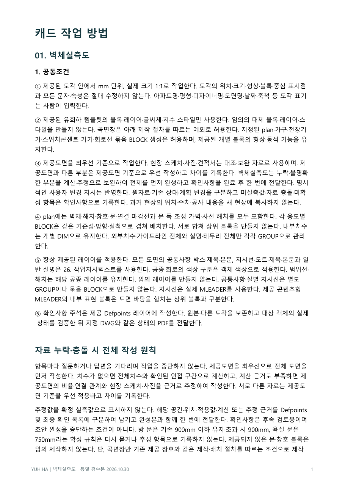
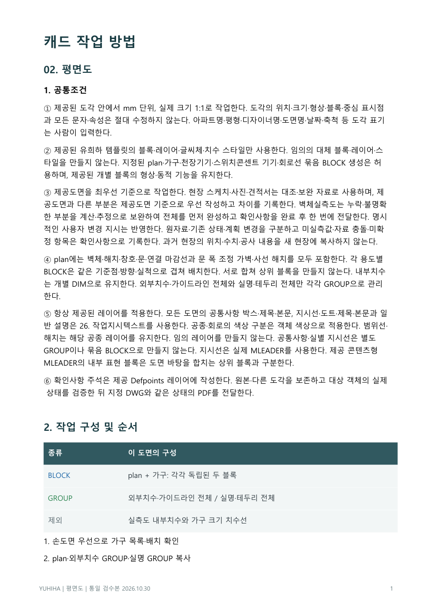
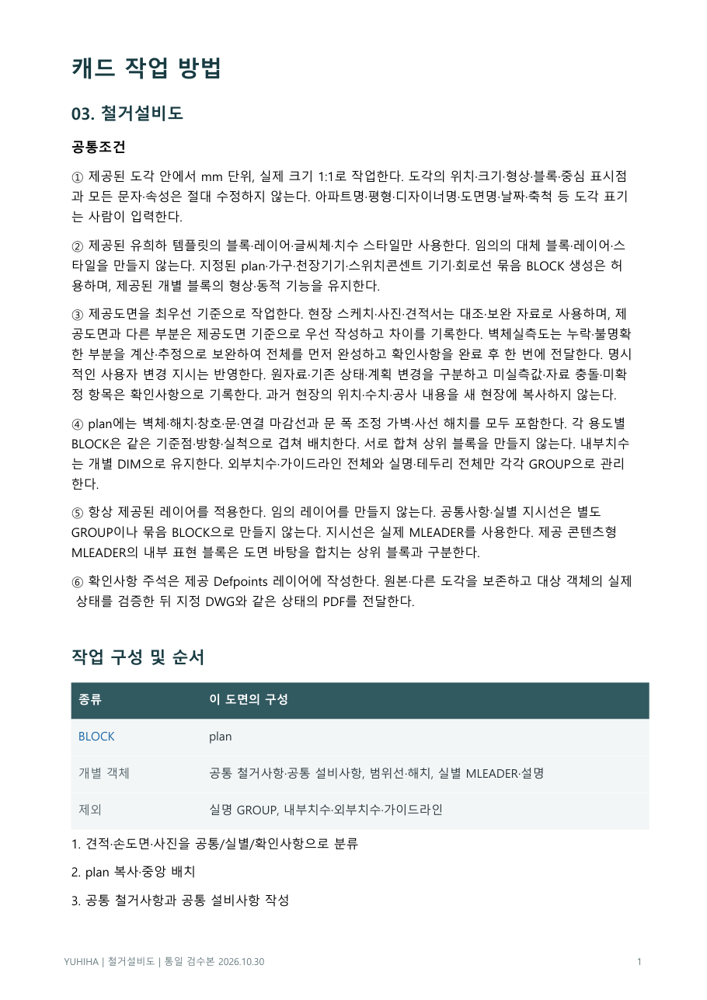
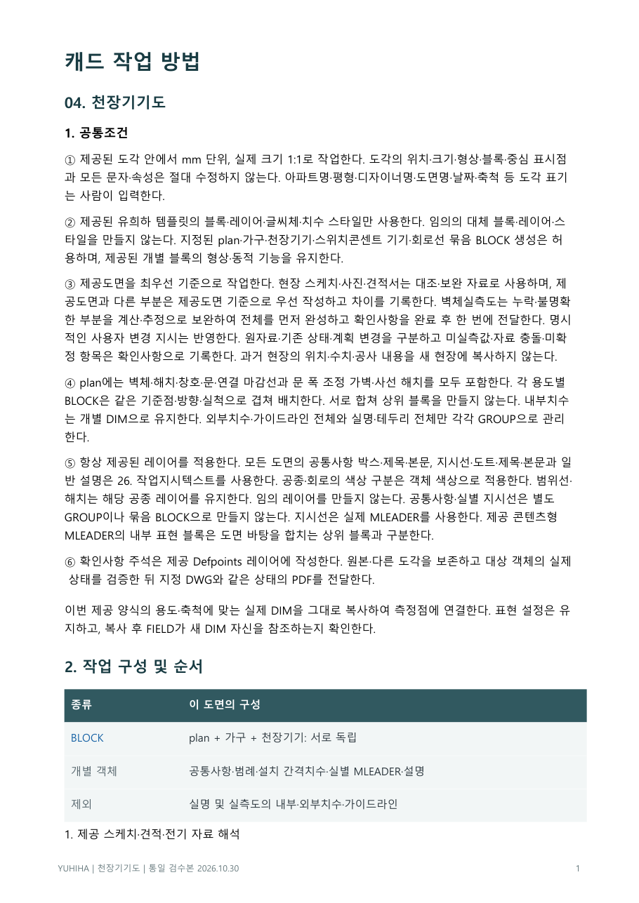
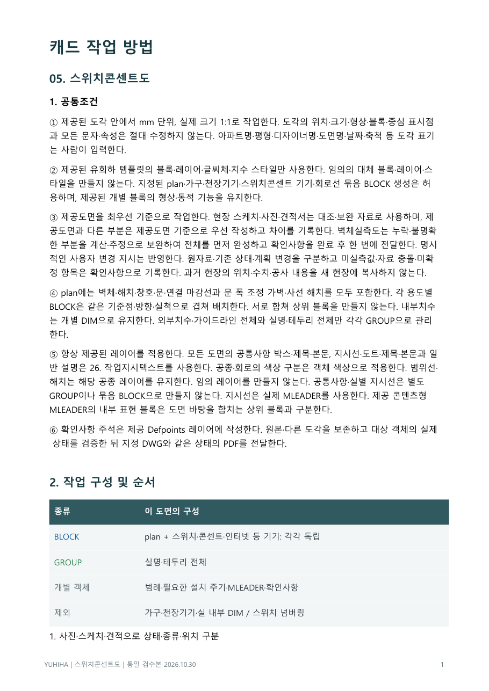
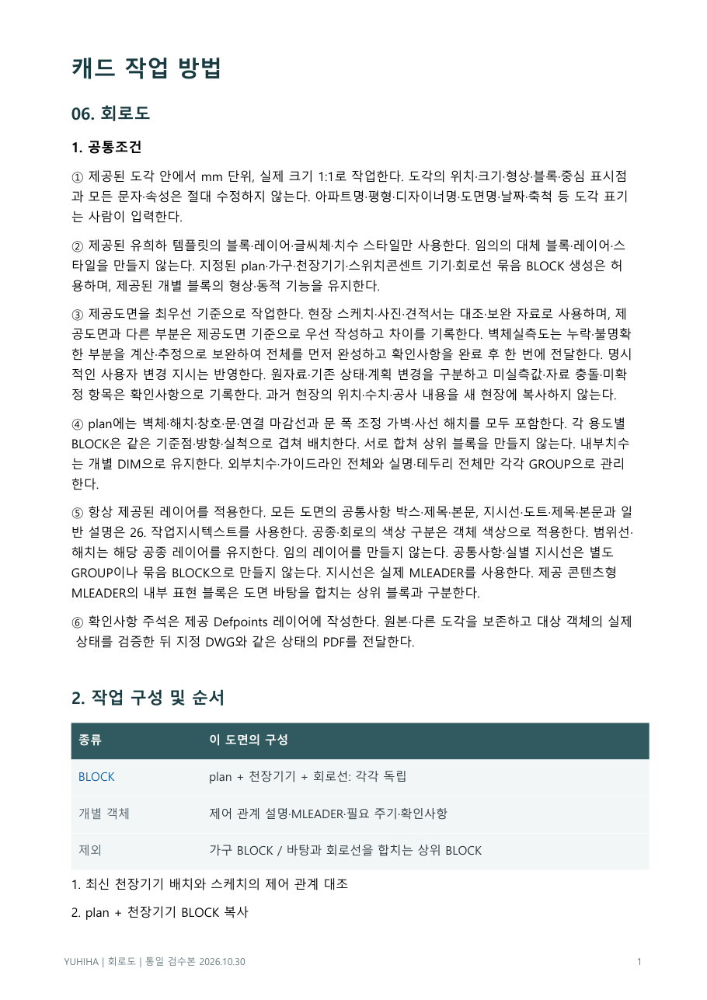
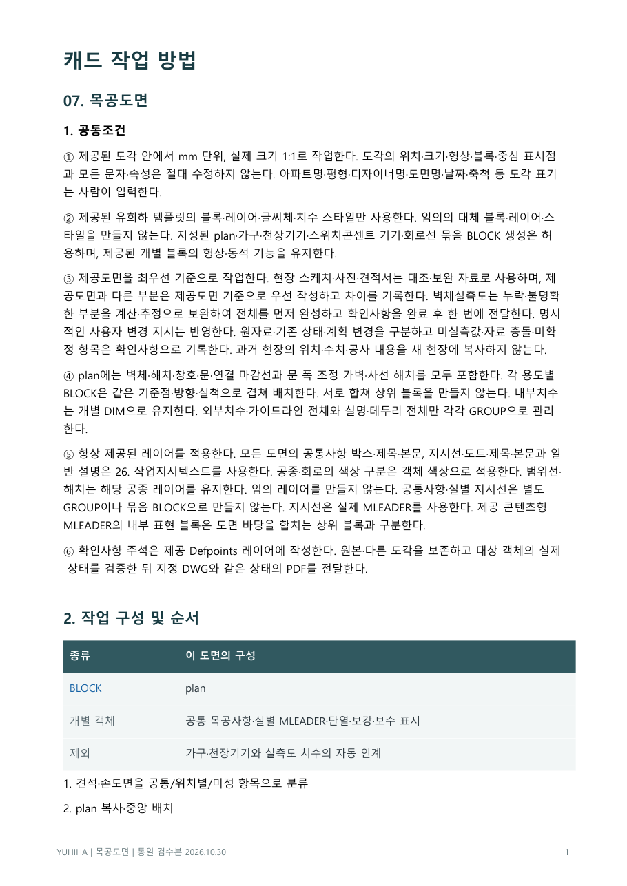

YUHIHA / AI 도면 작업 기준
유희하 CAD 작업 기준서
릴스에서 캐드가 혼자 도면을 그려 나가던 거, 기억하시죠? AI가 그때 따라 그린 유희하 작업 기준이에요. 벽체실측도부터 목공도면까지, 인테리어 도면 한 세트 7권을 한 번에 받을 수 있어요.
7권 한 번에 받기압축 파일 · 1.3MB · PDF 7개 (총 66쪽)안드로이드: 버튼을 누르면 바로 받아져요. 내 파일(파일) 앱 → 다운로드 폴더에 저장돼요.
아이폰: 버튼을 누르면 공유 화면이 떠요. '파일에 저장'을 누르면 파일 앱에 저장돼요.
인스타 안에서 받기가 안 되면 오른쪽 위 ⋯ → 외부 브라우저로 열기를 눌러 주세요. PC로 옮기려면 링크를 복사해 카톡 '나에게 보내기'로 보내세요.
먼저이 기준서는 이렇게 쓰여요
- 유희하는 도면을 그릴 때 AI(Claude)에게 직접 만든 캐드 작업 스킬을 쥐여 줘요. 스킬은 AI가 캐드를 직접 움직이는 손이고, 이 기준서는 그 손이 지켜야 할 작업 지침이에요.
- 그래서 문장이 사람에게 설명하는 말투보다 AI에게 시키는 말투에 가까워요. "임의로 맞추지 않는다", "사람이 직접 입력한다"처럼 AI가 해도 되는 것과 안 되는 것을 딱 잘라 적어 뒀어요.
- 기준서만으로 도면이 저절로 그려지지는 않아요. 실제로 AI가 그리려면 유희하 CAD 템플릿 + 캐드 작업 스킬 + 이 기준서 세 가지가 함께 있어야 해요. 스킬은 유희하가 직접 쓰는 도구라 이 자료에는 들어 있지 않아요.
- 스킬이 없어도 쓸모는 그대로예요. 사람이 도면을 그릴 때 작업 순서와 검수 체크리스트로 보시면 돼요. 신입 디자이너 교육용으로도 좋아요.
- 제공 CAD 템플릿
- 유희하 표준 양식 DWG와 출력 스타일 CTB예요. 유희하 CAD 자료에서 받을 수 있어요.
- 정답 도면
- AI가 결과를 맞춰 볼 완성 예시예요. 철거설비도 마지막 쪽에 들어 있어요(현장명·담당자는 지웠어요).
- 손실측도 · 견적서
- 현장에서 손으로 적어 온 치수와 견적 내용이에요. AI는 이걸 읽고 도면에 반영해요.
00이용 조건
- 개인 공부와 실무 작업에 자유롭게 참고하실 수 있어요.
- PDF를 다른 곳에 올리거나 재배포·판매할 수 없어요.
- 강의·교육 자료로 쓰시려면 먼저 @yuhiha_designers로 연락 주세요.
주변에 알려 주고 싶으시면 파일 대신 인스타 게시물을 공유해 주세요 🙏
01기준서 7권따로 받기 · 그리는 순서대로






